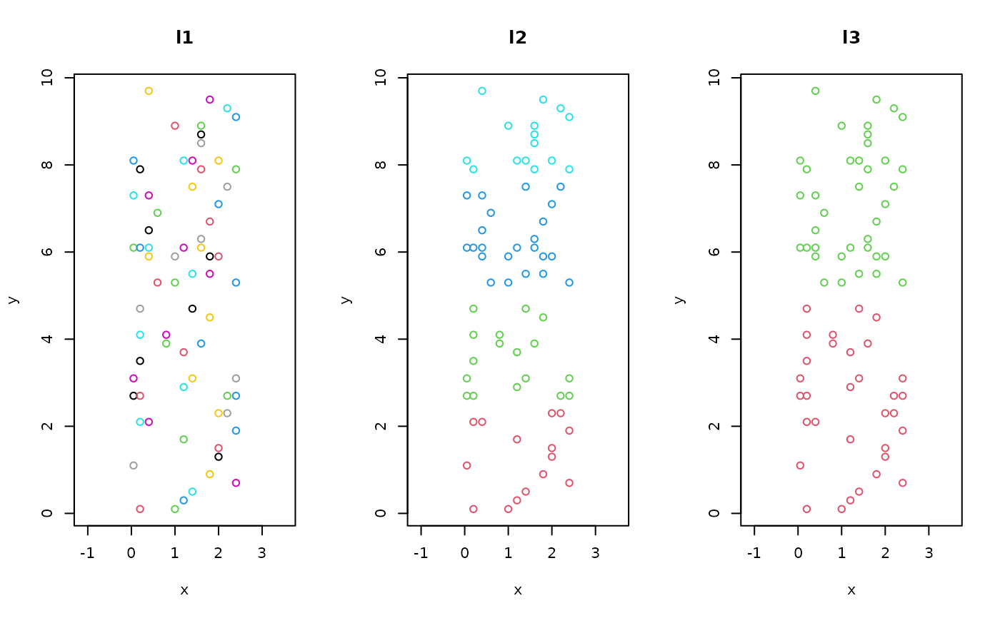

adipart.RdIn additive diversity partitioning, mean values of alpha diversity at lower levels of a sampling
hierarchy are compared to the total diversity in the entire data set (gamma diversity).
In hierarchical null model testing, a statistic returned by a function is evaluated
according to a nested hierarchical sampling design (hiersimu).
adipart(...)
# S3 method for default
adipart(y, x, index=c("richness", "shannon", "simpson"),
weights=c("unif", "prop"), relative = FALSE, nsimul=99,
method = "r2dtable", ...)
# S3 method for formula
adipart(formula, data, index=c("richness", "shannon", "simpson"),
weights=c("unif", "prop"), relative = FALSE, nsimul=99,
method = "r2dtable", ...)
hiersimu(...)
# S3 method for default
hiersimu(y, x, FUN, location = c("mean", "median"),
relative = FALSE, drop.highest = FALSE, nsimul=99,
method = "r2dtable", ...)
# S3 method for formula
hiersimu(formula, data, FUN, location = c("mean", "median"),
relative = FALSE, drop.highest = FALSE, nsimul=99,
method = "r2dtable", ...)A community matrix.
A matrix with same number of rows as in y, columns
coding the levels of sampling hierarchy. The number of groups within
the hierarchy must decrease from left to right. If x is missing,
function performs an overall decomposition into alpha, beta and
gamma diversities.
A two sided model formula in the form y ~ x,
where y is the community data matrix with samples as rows and
species as column. Right hand side (x) must be grouping variables
referring to levels of sampling hierarchy, terms from right to left
will be treated as nested (first column is the lowest, last is the
highest level). The formula will add a unique indentifier to rows and
constant for the rows to always produce estimates of row-level alpha
and overall gamma diversities. You must use non-formula
interface to avoid this behaviour. Interaction terms are
not allowed.
A data frame where to look for variables defined in the
right hand side of formula. If missing, variables are looked
in the global environment.
Character, the diversity index to be calculated (see Details).
Character, "unif" for uniform weights,
"prop" for weighting proportional to sample abundances to use
in weighted averaging of individual alpha values within strata of a
given level of the sampling hierarchy.
Logical, if TRUE then alpha and beta diversity
values are given relative to the value of gamma for function
adipart.
Number of permutations to use. If nsimul = 0,
only the FUN argument is evaluated.
It is thus possible to reuse the statistic values
without a null model.
Null model method: either a name (character string) of
a method defined in make.commsim or a
commsim function.
The default "r2dtable" keeps row sums and column sums fixed.
See oecosimu for Details and Examples.
A function to be used by hiersimu. This must be
fully specified, because currently other arguments cannot be passed
to this function via ....
Character, identifies which function (mean or median) is to be used to calculate location of the samples.
Logical, to drop the highest level or not. When
FUN evaluates only arrays with at least 2 dimensions, highest
level should be dropped, or not selected at all.
Other arguments passed to functions, e.g. base of
logarithm for Shannon diversity, or method, thin or
burnin arguments for oecosimu.
Additive diversity partitioning means that mean alpha and beta diversities add up to gamma diversity, thus beta diversity is measured in the same dimensions as alpha and gamma (Lande 1996). This additive procedure is then extended across multiple scales in a hierarchical sampling design with \(i = 1, 2, 3, \ldots, m\) levels of sampling (Crist et al. 2003). Samples in lower hierarchical levels are nested within higher level units, thus from \(i=1\) to \(i=m\) grain size is increasing under constant survey extent. At each level \(i\), \(\alpha_i\) denotes average diversity found within samples.
At the highest sampling level, the diversity components are calculated as $$\beta_m = \gamma - \alpha_m$$ For each lower sampling level as $$\beta_i = \alpha_{i+1} - \alpha_i$$ Then, the additive partition of diversity is $$\gamma = \alpha_1 + \sum_{i=1}^m \beta_i$$
Average alpha components can be weighted uniformly
(weight="unif") to calculate it as simple average, or
proportionally to sample abundances (weight="prop") to
calculate it as weighted average as follows $$\alpha_i =
\sum_{j=1}^{n_i} D_{ij} w_{ij}$$ where
\(D_{ij}\) is the diversity index and \(w_{ij}\) is the weight
calculated for the \(j\)th sample at the \(i\)th sampling level.
The implementation of additive diversity partitioning in
adipart follows Crist et al. 2003. It is based on species
richness (\(S\), not \(S-1\)), Shannon's and Simpson's diversity
indices stated as the index argument.
The expected diversity components are calculated nsimul times
by individual based randomisation of the community data matrix. This
is done by the "r2dtable" method in oecosimu by
default.
hiersimu works almost in the same way as adipart, but
without comparing the actual statistic values returned by FUN
to the highest possible value (cf. gamma diversity). This is so,
because in most of the cases, it is difficult to ensure additive
properties of the mean statistic values along the hierarchy.
An object of class "adipart" or "hiersimu" with same
structure as oecosimu objects.
Crist, T.O., Veech, J.A., Gering, J.C. and Summerville, K.S. (2003). Partitioning species diversity across landscapes and regions: a hierarchical analysis of \(\alpha\), \(\beta\), and \(\gamma\)-diversity. Am. Nat., 162, 734--743.
Lande, R. (1996). Statistics and partitioning of species diversity, and similarity among multiple communities. Oikos, 76, 5--13.
## NOTE: 'nsimul' argument usually needs to be >= 99
## here much lower value is used for demonstration
data(mite)
data(mite.xy)
data(mite.env)
## Function to get equal area partitions of the mite data
cutter <- function (x, cut = seq(0, 10, by = 2.5)) {
out <- rep(1, length(x))
for (i in 2:(length(cut) - 1))
out[which(x > cut[i] & x <= cut[(i + 1)])] <- i
return(out)}
## The hierarchy of sample aggregation
levsm <- with(mite.xy, data.frame(
l1=1:nrow(mite),
l2=cutter(y, cut = seq(0, 10, by = 2.5)),
l3=cutter(y, cut = seq(0, 10, by = 5)),
l4=rep(1, nrow(mite))))
## Let's see in a map
par(mfrow=c(1,3))
plot(mite.xy, main="l1", col=as.numeric(levsm$l1)+1, asp = 1)
plot(mite.xy, main="l2", col=as.numeric(levsm$l2)+1, asp = 1)
plot(mite.xy, main="l3", col=as.numeric(levsm$l3)+1, asp = 1)

par(mfrow=c(1,1))
## Additive diversity partitioning
adipart(mite, index="richness", nsimul=19)
#> adipart object
#>
#> Call: adipart(y = mite, index = "richness", nsimul = 19)
#>
#> nullmodel method ‘r2dtable’ with 19 simulations
#> options: index richness, weights unif
#> alternative hypothesis: statistic is less or greater than simulated values
#>
#> statistic SES mean 2.5% 50% 97.5% Pr(sim.)
#> alpha.1 15.114 -46.372 22.335 22.034 22.300 22.557 0.05 *
#> gamma 35.000 0.000 35.000 35.000 35.000 35.000 1.00
#> beta.1 19.886 46.372 12.665 12.443 12.700 12.966 0.05 *
#> ---
#> Signif. codes: 0 ‘***’ 0.001 ‘**’ 0.01 ‘*’ 0.05 ‘.’ 0.1 ‘ ’ 1
## the next two define identical models
adipart(mite, levsm, index="richness", nsimul=19)
#> adipart object
#>
#> Call: adipart(y = mite, x = levsm, index = "richness", nsimul = 19)
#>
#> nullmodel method ‘r2dtable’ with 19 simulations
#> options: index richness, weights unif
#> alternative hypothesis: statistic is less or greater than simulated values
#>
#> statistic SES mean 2.5% 50% 97.5% Pr(sim.)
#> alpha.1 15.114 -33.686 22.34662 22.01643 22.32857 22.674 0.05 *
#> alpha.2 29.750 -31.013 34.81579 34.50000 34.75000 35.000 0.05 *
#> alpha.3 33.000 0.000 35.00000 35.00000 35.00000 35.000 0.05 *
#> gamma 35.000 0.000 35.00000 35.00000 35.00000 35.000 1.00
#> beta.1 14.636 6.788 12.46917 12.02821 12.42143 12.922 0.05 *
#> beta.2 3.250 18.769 0.18421 0.00000 0.25000 0.500 0.05 *
#> beta.3 2.000 0.000 0.00000 0.00000 0.00000 0.000 0.05 *
#> ---
#> Signif. codes: 0 ‘***’ 0.001 ‘**’ 0.01 ‘*’ 0.05 ‘.’ 0.1 ‘ ’ 1
adipart(mite ~ l2 + l3, levsm, index="richness", nsimul=19)
#> adipart object
#>
#> Call: adipart(formula = mite ~ l2 + l3, data = levsm, index =
#> "richness", nsimul = 19)
#>
#> nullmodel method ‘r2dtable’ with 19 simulations
#> options: index richness, weights unif
#> alternative hypothesis: statistic is less or greater than simulated values
#>
#> statistic SES mean 2.5% 50% 97.5% Pr(sim.)
#> alpha.1 15.114 -45.449 22.322556 22.095714 22.300000 22.645 0.05 *
#> alpha.2 29.750 -33.904 34.894737 34.612500 35.000000 35.000 0.05 *
#> alpha.3 33.000 -17.206 34.973684 34.725000 35.000000 35.000 0.05 *
#> gamma 35.000 0.000 35.000000 35.000000 35.000000 35.000 1.00
#> beta.1 14.636 11.597 12.572180 12.290714 12.607143 12.831 0.05 *
#> beta.2 3.250 26.560 0.078947 0.000000 0.000000 0.250 0.05 *
#> beta.3 2.000 17.206 0.026316 0.000000 0.000000 0.275 0.05 *
#> ---
#> Signif. codes: 0 ‘***’ 0.001 ‘**’ 0.01 ‘*’ 0.05 ‘.’ 0.1 ‘ ’ 1
## Hierarchical null model testing
## diversity analysis (similar to adipart)
hiersimu(mite, FUN=diversity, relative=TRUE, nsimul=19)
#> hiersimu object
#>
#> Call: hiersimu(y = mite, FUN = diversity, relative = TRUE, nsimul = 19)
#>
#> nullmodel method ‘r2dtable’ with 19 simulations
#>
#> alternative hypothesis: statistic is less or greater than simulated values
#>
#> statistic SES mean 2.5% 50% 97.5% Pr(sim.)
#> level_1 0.76064 -59.091 0.93855 0.93248 0.93820 0.9425 0.05 *
#> leve_2 1.00000 0.000 1.00000 1.00000 1.00000 1.0000 1.00
#> ---
#> Signif. codes: 0 ‘***’ 0.001 ‘**’ 0.01 ‘*’ 0.05 ‘.’ 0.1 ‘ ’ 1
hiersimu(mite ~ l2 + l3, levsm, FUN=diversity, relative=TRUE, nsimul=19)
#> hiersimu object
#>
#> Call: hiersimu(formula = mite ~ l2 + l3, data = levsm, FUN = diversity,
#> relative = TRUE, nsimul = 19)
#>
#> nullmodel method ‘r2dtable’ with 19 simulations
#>
#> alternative hypothesis: statistic is less or greater than simulated values
#>
#> statistic SES mean 2.5% 50% 97.5% Pr(sim.)
#> unit 0.76064 -60.717 0.93897 0.93477 0.93800 0.9445 0.05 *
#> l2 0.89736 -153.694 0.99787 0.99676 0.99804 0.9988 0.05 *
#> l3 0.92791 -561.529 0.99936 0.99918 0.99937 0.9995 0.05 *
#> all 1.00000 0.000 1.00000 1.00000 1.00000 1.0000 1.00
#> ---
#> Signif. codes: 0 ‘***’ 0.001 ‘**’ 0.01 ‘*’ 0.05 ‘.’ 0.1 ‘ ’ 1
## Hierarchical testing with the Morisita index
morfun <- function(x) dispindmorisita(x)$imst
hiersimu(mite ~., levsm, morfun, drop.highest=TRUE, nsimul=19)
#> hiersimu object
#>
#> Call: hiersimu(formula = mite ~ ., data = levsm, FUN = morfun,
#> drop.highest = TRUE, nsimul = 19)
#>
#> nullmodel method ‘r2dtable’ with 19 simulations
#>
#> alternative hypothesis: statistic is less or greater than simulated values
#>
#> statistic SES mean 2.5% 50% 97.5% Pr(sim.)
#> l1 0.52070 5.6496 0.365853 0.334568 0.356153 0.4226 0.05 *
#> l2 0.60234 11.5615 0.166932 0.098654 0.181426 0.2112 0.05 *
#> l3 0.67509 17.8628 -0.175050 -0.266788 -0.165749 -0.0983 0.05 *
#> ---
#> Signif. codes: 0 ‘***’ 0.001 ‘**’ 0.01 ‘*’ 0.05 ‘.’ 0.1 ‘ ’ 1